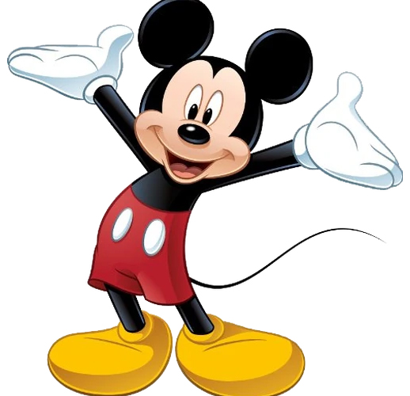

1 Пригоди миші
“Міккі Маус”
Міккі любить пригоди, але характер його спокійний і добрий. Сьогодні ми впізнаємо Міккі Мауса в його культових червоних шортах, жовтих туфлях і білих рукавичках. Він оптимістичний, сміливий і милий (The Walt Disney Family Museum).
Більше інформації